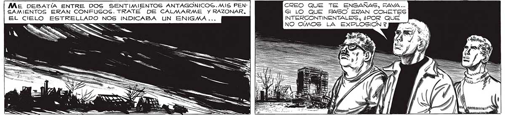
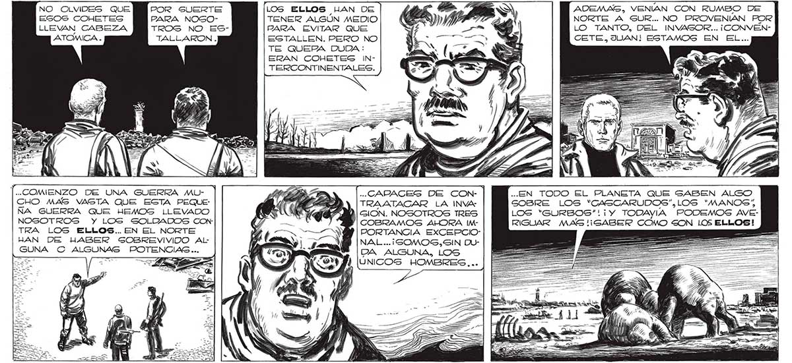

248 NO OLVIDES QUE EGOS COHETES LLEVAN CABEZA ATOMICA . POR SUERTE PARA NOSOTROS NO ESTALLARKON . [..COMENZO DE UNA GUERRA MUCHO MAS VASTA QUE ESTA PEQUE: ÑA GUERRA QUE HEMOS LLEVADO NOSOTROS Y LOS SOLDADOS CON: TRA LOS ELLOS... EN EL NORTE HAN DE HABER SOBREVIVIDO AlLGUNA C ALGUNAS POTENCIAS... Me DEBATÍA ENTRE DOS SENTIMIENTOS ANTAGONICOS.MIS PENSGSAMIENTOS ERAN CONFUSOS. TRATE DE CALMARME Y RAZONAR, LOS ELLOS LAN DE TENER ALGUN MEDIO PARA EVITAR QUE ESTALLEN. PERO NO TE QUEPA DUDA : ERAN COHETES INTERCONTINENTALES. ..GARAGES DE CON- | TRAATACAR LA INVA: GION. NOSOTROS TRES COBRAMOS AHORA IMPORTANCIA EXCEPCIO: NAL ...¡SOMOS,SIN DUPA ALGUNA, LOS ÚNICOS HOMBRES... CREO QUE TE ENGAÑASG, FAVA... Gr LO QUE PASO ERAN COHETES INTERCONTINENTALES, ¿POR QUE NO OIMOS LA EXPLOSION 2 Y 7 WU Se SA ADEMAG, VENIAN CON RUMBO DE NORTE A SUR... NO PROVENIAN POR LO TANTO, DEL INVASOR... ¡CONVÉNCETE, JUAN! ESTAMOS EN EL... ..EN TODO EL PLANETA QUE SABEN ALGO GOBRE LOS “CASCARUDOS”,LOS “MANOS” LOS “GURBOS”!i¡Y TODAYIA PODEMOS AVERIGUAR MAS '¡ SABER COMO SON LOS ELLOS!

